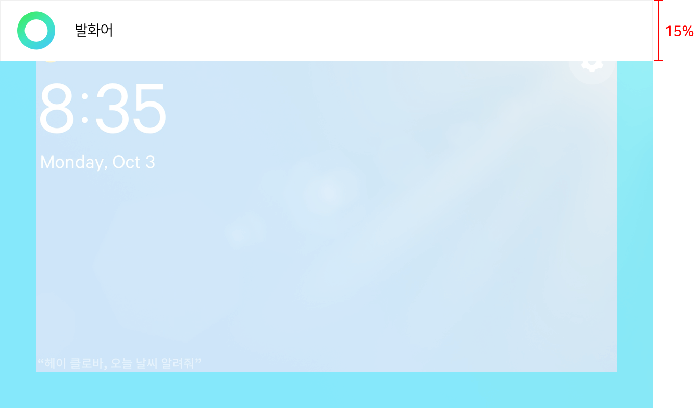
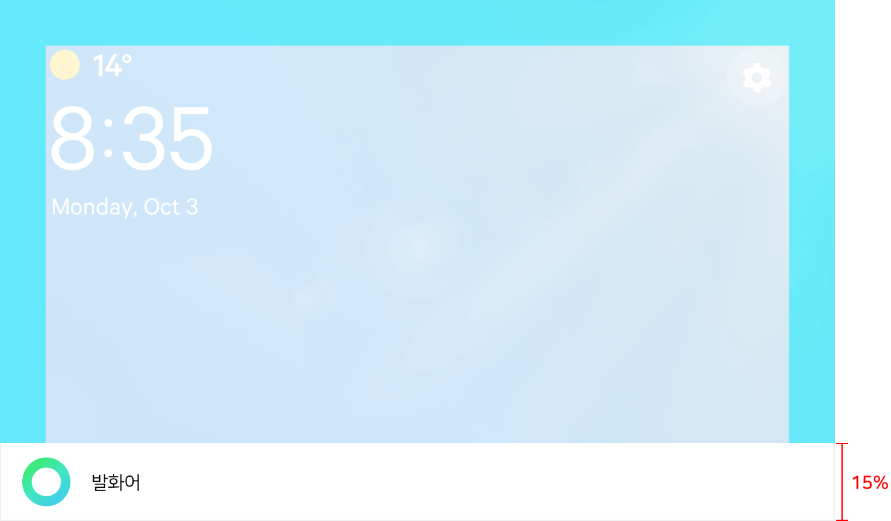
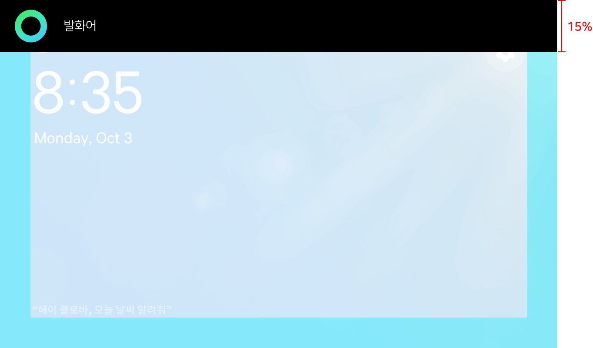
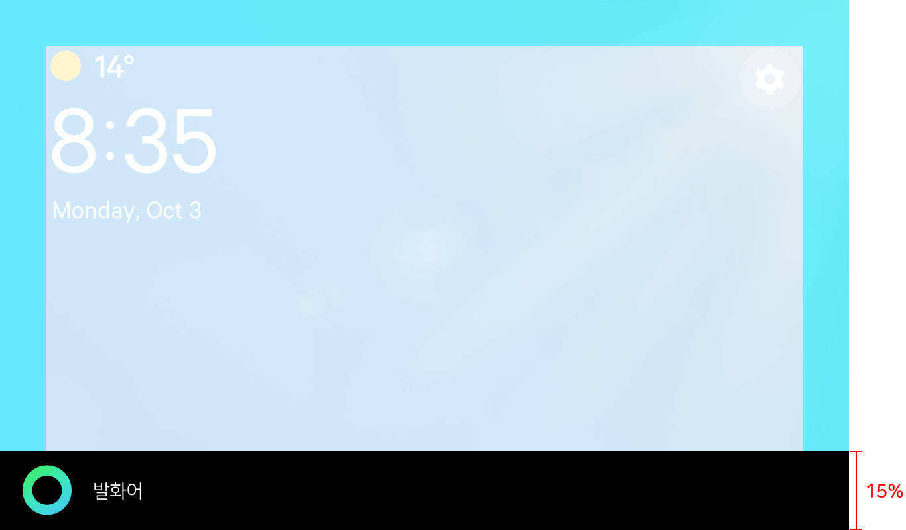
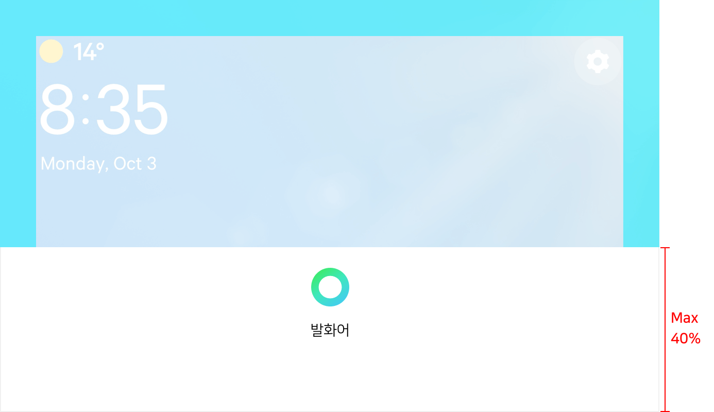
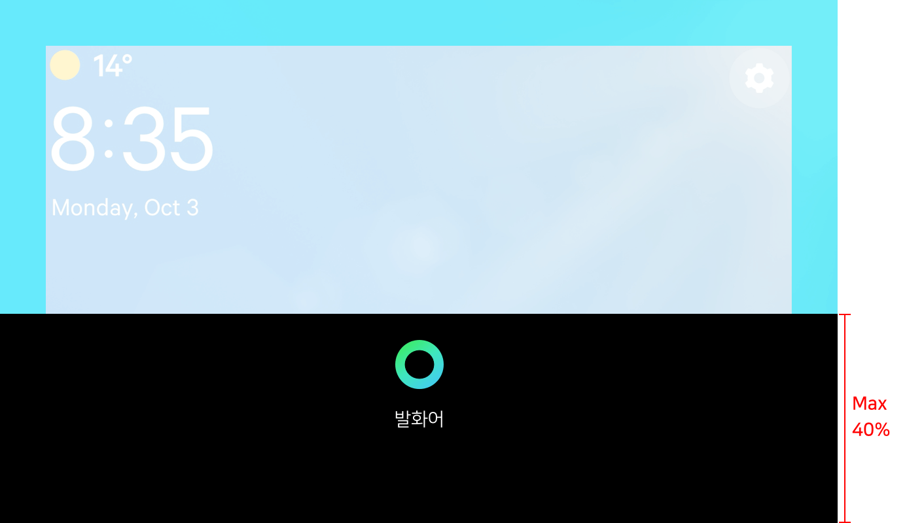

Voice User Interface
CLOVA는 주로 사용자의 목소리를 통해 요청을 받고 그 결과를 제공합니다. Voice User Interface(이하 VUI)는 이와 같이 음성이 주가 되는 사용 환경에서 사용자에게 제공되는 GUI 디자인을 일컫습니다. CLOVA는 VUI의 대표적인 요소로 Push To Talk 버튼과 Green Dot을 제공하고 있으며 이 페이지는 다음에 대해 설명합니다.
Note!
Push To Talk 버튼과 Green Dot에 대한 이미지 자료를 구하려면 제휴 담당자에게 연락바랍니다.
Push To Talk 버튼
Push to Talk 버튼(이하 PTT 버튼)은 Green Dot이 활성되도록 만드는 버튼이며, 주로 화면에서 GUI 버튼으로 구현됩니다. 이 절에서는 PTT 버튼의 색상과 동작 그리고 응용 방법에 대해 설명합니다.
PTT 버튼 색상
PTT 버튼은 아래와 같은 마이크 모양에 두 가지 색의 그라데이션을 주어 표시해야 합니다.

클라이언트가 마이크 꺼짐(Mic. off) 또는 오류(Error) 상태이면, 아래와 같이 비활성화 상태로 표시합니다.
PTT 버튼 응용
아래와 같이 원형의 테두리가 있는 PTT 버튼처럼 UI를 응용하여 사용할 수도 있습니다. 이때, 마이크 아이콘은 원형 테두리의 가운데 위치해야 하며, 좌우 여백은 마이크 아이콘과 같은 너비로 상하 여백은 마이크 아이콘 높이의 절반 크기로 여백을 유지해야 합니다.
Green Dot
Green Dot은 CLOVA의 음성 검색 도구이자 정체성을 나타내는 GUI 요소입니다. Green Dot은 사용자의 음성 입력 수신, CLOVA 음성 출력 등 CLOVA 음성 동작과 관련된 상태를 표현합니다. 화면을 가진 클라이언트 기기는 Green Dot을 표현해야 합니다.
Green Dot 색상
Green Dot은 다음과 같이 도넛 형태의 고리 모양에 세 가지 색의 그라데이션을 주어 표시해야 합니다.
Green Dot 배경 색상
Green Dot이 모든 환경에서 높은 명시성이 유지될 수 있도록 색의 대비를 고려해 배경 색상을 선택해야 합니다. 다음은 Black 배경을 적용할 때 사용할 수 있는 배경 색상과 그 대비를 보여줍니다.
다음은 CLOVA Green 배경을 적용할 때 사용할 수 있는 배경 색상과 그 대비를 보여줍니다.
Green Dot 유의 사항
Green Dot을 사용하기 전에 아래 유의 사항을 지켜주십시오.

{kind=link}
{kind=link}
{kind=link}
{kind=link}
{kind=link}
{kind=link}
{kind=link}
{kind=link}
{kind=link}
{kind=link}
{kind=link}
{kind=link}
VUI 동작
VUI 요소인 PTT 버튼과 Green Dot은 기본 동작 또는 터치 인터페이스 미사용 시 동작으로 표현되어야 합니다. 여기서는 각 방식이 어떻게 표현되어야 하는지 설명합니다.
기본 동작
VUI는 기본적으로 단계에 따라 다음과 같이 표현되어야 합니다.
{kind=link}
{kind=link}
3. 듣기(Listening)

사용자의 음석 입력이 실제로 인지되어 입력되고 있을 때 표시되는 동작
{kind=link}
{kind=link}
{kind=link}
{kind=link}
Note!
Green Dot 동작을 보여주는 속도는 30fps여야 합니다.
사용자의 동작이나 클라이언트의 상태 변화에 따라 VUI를 표현해야 합니다. 다음은 각 상태에 따라 어떻게 VUI를 표현해야 하는지 그 규칙을 설명합니다.
- 사용자가 호출어를 부르거나 버튼을 눌러 클라이언트가 Attending 상태로 진입하면 준비 동작을 재생합니다.
- 준비 동작을 한 번 표시한 후 클라이언트가 Listening 상태로 진입하면 사용자의 음성 입력이 끝날 때까지 듣기 동작을 반복 재생합니다.
- 사용자의 입력이 끝나고 클라이언트가 Processing & reporting 상태로 진입하면 응답을 출력하거나 결과 화면을 보여주기 전까지 분석/처리 동작을 반복 재생합니다.
- 응답(TTS)를 출력할 때 대답의 진입 구간을 한 번 재생한 후 반복 구간을 응답이 끝날 때까지 반복 재생합니다. 응답이 종료되면 종료 구간을 한 번 재생합니다.
- 만약, 응답을 출력할 때 대답 동작을 구분하여 표현하기 어렵다면 반복 구간만 반복 재생합니다.
- 사용자 요청에 대해 필요한 작업을 모두 수행하여 클라이언트가 Idle 상태로 진입하게 되면 완료 동작을 한 번 재생한 후 입력 전(PTT 버튼) 단계로 돌아갑니다.
터치 인터페이스 미사용 시 동작
터치 인터페이스를 사용할 수 없는 기기는 PTT 버튼을 포함하지 않고 Green Dot으로만 동작을 표시해야 합니다. PTT 버튼이 포함되지 않은 VUI 동작은 다음과 같이 표현되어야 합니다.
1. 준비(Intro)
2. 대기(Waiting)
{kind=link}
사용자가 호출어를 부르거나 버튼을 눌렀을 때 표시되는 동작
사용자의 음성 입력이 실제로 입력되기 전까지 표시되는 동작
3. 듣기(Listening)
4. 분석/처리(Processing)
사용자의 음석 입력이 실제로 인지되어 입력되고 있을 때 표시되는 동작
사용자의 요청을 분석하고 이를 처리하고 있을 때 표시되는 동작
4. 대답(Answering)
7. 오류(Error)
사용자의 요청에 대한 응답을 TTS로 출력하고 있을 때 표시되는 동작. 이 동작은 다음과 같이 세 구간으로 구분됩니다.
- 진입 구간: 응답(TTS)이 시작됨을 표현 (1~13번 프레임)
- 반복 구간: TTS 출력을 표현(14~29번 프레임). 응답이 완료될 때까지 이 구간을 반복합니다.
- 종료 구간: 응답이 종료됨을 표현 (30~41번 프레임)
5. 완료(Complete)
오류가 발생한 상태
사용자의 요청에 대한 응답을 마무리할 때 표시되는 동작
Note!
Green Dot 동작을 보여주는 속도는 30fps여야 합니다.
사용자의 동작이나 클라이언트의 상태 변화에 따라 VUI를 표현해야 합니다. 다음은 각 상태에 따라 어떻게 VUI를 표현해야 하는지 그 규칙을 설명합니다.
- 사용자가 호출어를 부르거나 버튼을 눌러 클라이언트가 Attending 상태로 진입하면 준비 동작을 재생합니다.
- 준비 동작을 한 번 표시한 후 마이크를 통해 사용자의 실제 음성 입력이 시작되기 전까지 대기 동작을 반복 재생합니다.
- 사용자의 실제 음성이 입력되기 시작하여 클라이언트가 Listening 모드로 진입하면 사용자의 음성 입력이 끝날 때까지 듣기 동작을 반복 재생합니다.
- 사용자의 입력이 끝나고 클라이언트가 Processing & reporting 상태로 진입하면 응답을 출력하거나 결과 화면을 보여주기 전까지 분석/처리 동작을 반복 재생합니다.
- 응답(TTS)를 출력할 때 대답의 진입 구간을 한 번 재생한 후 반복 구간을 응답이 끝날 때까지 반복 재생합니다. 응답이 종료되면 종료 구간을 한 번 재생합니다.
- 만약, 응답을 출력할 때 대답 동작을 구분하여 표현하기 어렵다면 반복 구간만 반복 재생합니다.
- 사용자 요청에 대해 필요한 작업을 모두 수행하여 클라이언트가 Idle 상태로 진입하게 되면 완료 동작을 한 번 재생합니다.
VUI 요소 화면 배치
화면이 있는 클라이언트는 음성 반응을 나타내기 VUI를 제공해야 하며, Green Dot 또는 PPT 버튼과 같은 VUI 요소와 함께 다음과 같은 UI 요소들이 표시되어야 합니다. 이 절에서는 VUI와 관련된 요소들이 화면에 어떻게 배치되어야 하는지 설명합니다.
{kind=link}
기본 화면 배치
다음은 기본적인 화면 구성 및 여백을 보여줍니다. 일반적으로 상단 또는 하단에 Interative bar를 배치하며 Interative bar는 화면 전체 높이의 15 %에 해당하는 높이를 할당하여 표시합니다.
- 상단 배치

{kind=link}
- 하단 배치

{kind=link}
기본 화면 배치 - 다크 모드
기본 화면 배치에서 다크 모드를 적용하려면 VUI 요소 Interactive Bar 영역에 Black 색상(#000000)을 사용합니다. 기기의 특징이나 사용 환경에 따라 불투명도(Opacity)를 최대 50 %까지 적용할 수 있습니다.
- 상단 배치

{kind=link}
- 하단 배치

{kind=link}
특수 화면 배치
화면의 비율 및 해상도에 따라 특수하게 아래와 같이 Interactive Bar의 높이를 더 크게하여 화면을 구성할 수 있습니다. 이때 Interactive Bar 영역의 높이는 화면 전체 높이의 40 %에 해당하는 높이까지 키울 수 있습니다.
- 하단 배치

{kind=link}
- 하단 배치 - 다크 모드

{kind=link}
VUI 적용 예
CLOVA의 VUI가 적용된 예는 다음과 같습니다.
{kind=link}
{kind=link}
{kind=link}